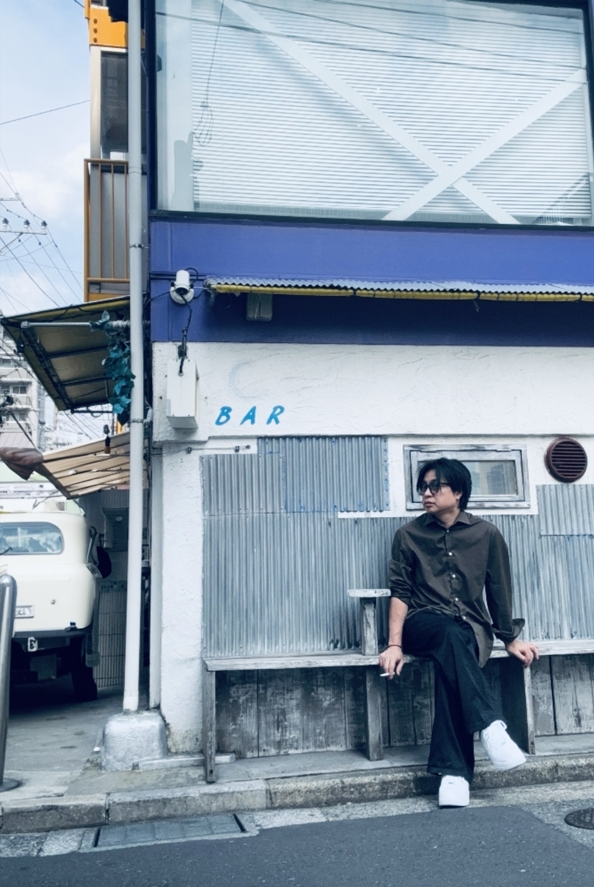
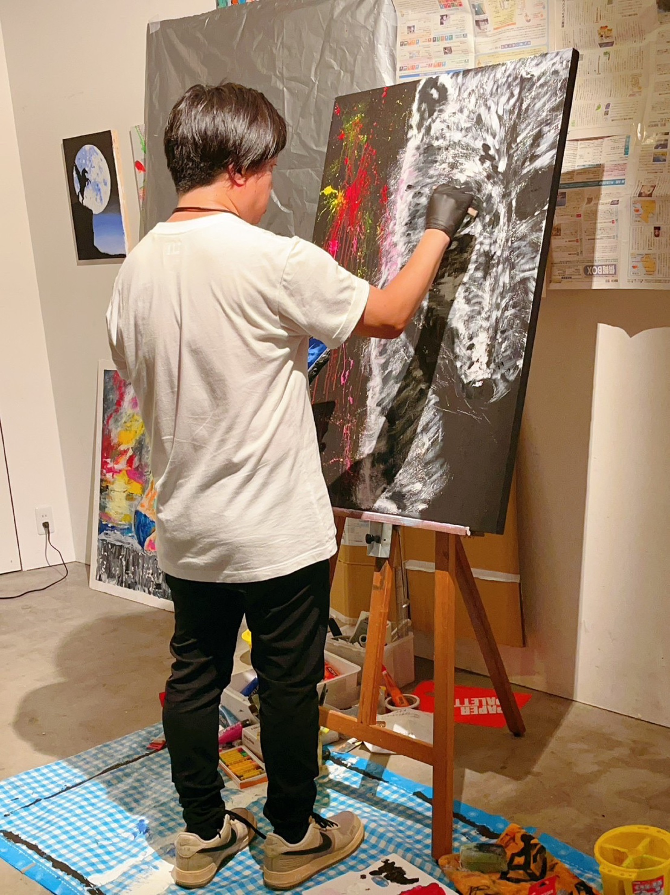
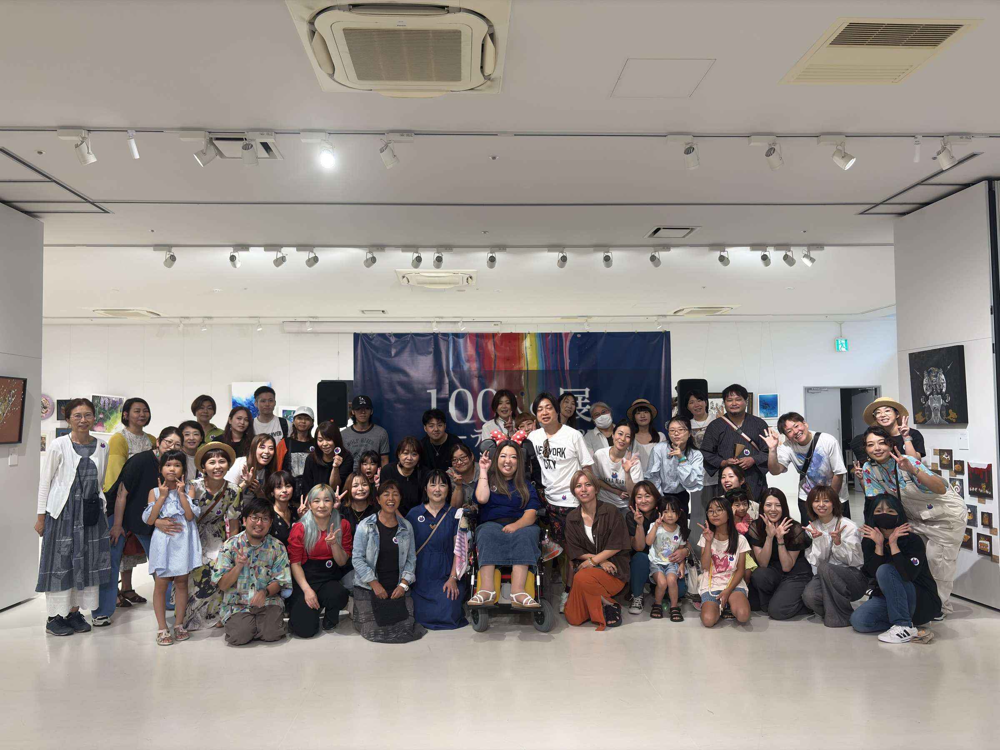

人物について
石丸
篤史
Art for Being 代表。アーティスト名「世界のまる」、通称「セカマル」。人の魅力を表現する仕事から始まり、いまは人が表現できる場そのものをつくっています。

Origin
福岡県北九州市に生まれる。
1979年6月1日生まれ。ここから、領域を越えて続く活動が始まりました。
Hair & Makeup
最初に向き合ったのは、
人の魅力だった。
2003年よりヘアメイクとして活動。美容とヘアメイクの現場を通して、その人が持つ魅力を表現する仕事に携わりました。
- 『CanCam』
- 『Zipper』
- 押切もえ ほかモデル
- ヘアショー
- 青山円形劇場での舞台
- 福岡での映画ヘアメイク

Design / 時期未登録
人だけでなく、
価値の見せ方へ。
企業・ブランドロゴ、アパレル、Web、ホームページ、LPへ活動を拡大。UNIQLO × 博多織のコラボ限定Tシャツをデザインし、ミーナ天神店で販売されました。

Art / 世界のまる
表現する側へ。
2023年3月、アート活動を開始。アーティスト名「世界のまる（セカマル）」として、作品制作と展示に取り組みます。

100人のアーティスト展
自分が表現することから、
人が表現できる場をつくることへ。
2024年8月に第1回を開催。2026年8月までに計4回を主催し、累計出展者441名、累計来場者1,530名の場へ育てました。
2025
Bali Exhibition
バリ島のカフェ「Api Aps（アピアピ）」で、「世界の丸（セカマル）」名義の個展を開催。
該当する旅・展示写真は人物・場所・権利の確認が未完了のため、本ページでは使用していません。
Now / 2026
経験を束ねて、
次の場をつくる。
現在、最も注力するのはイベント企画・プロデュース。アート、デザイン、AI、リアルな体験を横断し、人が集まり、体験し、表現できる場を企画していきます。
AIにできることはAIへ。
人間は、人間にしか経験できないことをする。